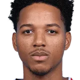

2015-16 to 2017-18 · Career Map
Los Angeles Lakers, New Orleans Pelicans, Orlando Magic, Minnesota Timberwolves
Played 3 seasons for 4 teams; his teams went 7–34 in his games.
Title Finals Other playoffs Missed. #1 = champion; the dashed line is last place that season. Each point opens that season's final standings.
All 30 teams ranked in 2017-18, his best finish (#12)Help by season · Compare with a peer · How help and peers work
Career: regular seasons 1946-47 through 2025-26. 2026-27 (games through Nov. 16, 2026) is shown separately and is not in these totals. Each card opens its leaderboard with him highlighted. How we count.
Newest first; every header sorts. Final NBA finish is the team's rank among all teams that season (#1 = champion) and opens that season's standings. "Without him" uses the team-season window; the span line counts only the games between his first and last game for the team.
| 2017-18 | Minnesota TimberwolvesRegular season: 4th in Northwest, 8th in West | #12 of 30 | 47–35 57.3% | Lost first round to Houston Rockets 1–4 | 1 of 82 | 0–1 0.0% | 47–34 58.0%span: N/A, gap N/A | −58.0 pp |
| 2016-17 | New Orleans PelicansStint 1 of 2: Nov. 22, 2016 to Dec. 8, 2016. Season summary uses this stint.Regular season: 4th in Southwest, 10th in West | #21 of 30 | 34–48 41.5% | Missed the playoffs | 9 of 82 | 3–6 33.3% | 14–21 40.0%span: N/A, gap N/A | −6.7 pp |
| 2016-17 | Orlando MagicStint 2 of 2: Jan. 22, 2017 to Jan. 27, 2017.Regular season: 5th in Southeast, 13th in East | #26 of 30 | 29–53 35.4% | Missed the playoffs | 2 of 82 | 0–2 0.0% | 19–38 33.3%span: 0–1, gap 0.0 pp | −33.3 pp |
| 2015-16 | Los Angeles LakersRegular season: 5th in Pacific, 15th in West | #29 of 30 | 17–65 20.7% | Missed the playoffs | 29 of 82 | 4–25 13.8% | 13–40 24.5%span: 8–25, gap −10.4 pp | −10.7 pp |
From the lineup data, 1996-97 on. On/off is net points per 100 possessions with him on the floor minus off, a different unit from the win-rate gaps. Started and off the bench are team records in those games; close games are those within 5 points in the last 5 minutes with him on the floor.
| 2017-18 | Minnesota Timberwolves | +61.4 | N/A | 0–1 0.0% | N/A |
| 2016-17 | New Orleans Pelicans | −5.0 | N/A | 3–6 33.3% | 0–2 0.0% |
| 2016-17 | Orlando Magic | +85.3 | N/A | 0–2 0.0% | N/A |
| 2015-16 | Los Angeles Lakers | +20.6 | 3–8 27.3% | 1–17 5.6% | 1–3 25.0% |
Help = the Teammates Score weights (MVP and Finals MVP 10, All-NBA 1st 4, DPOY 4, All-NBA 2nd 3, All-NBA 3rd 2, All-Star 1 and smaller honors) for the honors his teammates won that season, counting only teammates who shared at least one game with him for that team. Entering = the same teammates' honors from the season before, so it does not reflect the season being compared. 0 means no honored teammate; a + means a teammate's record is missing.
| Teammates behind it | ||||
|---|---|---|---|---|
| 2017-18 | Minnesota Timberwolves | 3.0 | 0 | Karl-Anthony Towns All-NBA 3rd, All-Star (3.0; 1 games together) |
| 2016-17 | New Orleans Pelicans | 6.2 | 1.0 | Anthony Davis All-Def 2nd, All-NBA 1st, All-Star, All-Star MVP (6.0; 9 games together); Buddy Hield All-Rookie 1st (0.2; 9 games together) |
| 2016-17 | Orlando Magic | 0 | 0 | No honored teammate (0) |
| 2015-16 | Los Angeles Lakers | 1.1 | 1.8 | Kobe Bryant All-Star (1.0; 17 games together); D'Angelo Russell All-Rookie 2nd (0.1; 27 games together); Louis Williams honors the season before (0; 26 games together); Jordan Clarkson honors the season before (0; 26 games together) |
Suggested peers need 300+ career games. Pick anyone below.
Regular season, completed seasons: 41 games, 7–34, against 22 franchises. Grouped by franchise (named as today); game lists keep each team's name that season.
| Games list | |||||||
|---|---|---|---|---|---|---|---|
| Oklahoma City ThunderMost-faced: Russell Westbrook (4 games) · Head-to-Head | 4 | 0–4 | 0.0% | −4 | N/A | 2015-16 to 2016-17 | |
| Golden State WarriorsMost-faced: Andre Iguodala (3 games) · Head-to-Head | 3 | 0–3 | 0.0% | −3 | N/A | 2015-16 to 2016-17 | |
| Memphis GrizzliesMost-faced: JaMychal Green (3 games) · Head-to-Head | 3 | 0–3 | 0.0% | −3 | N/A | 2015-16 to 2016-17 | |
| Sacramento KingsMost-faced: Rudy Gay (3 games) · Head-to-Head | 3 | 0–3 | 0.0% | −3 | N/A | 2015-16 | |
| Utah JazzMost-faced: Rudy Gobert (3 games) · Head-to-Head | 3 | 0–3 | 0.0% | −3 | N/A | 2015-16 to 2017-18 | |
| Atlanta HawksMost-faced: Kyle Korver (2 games) · Head-to-Head | 2 | 1–1 | 50.0% | 0 | N/A | 2015-16 to 2016-17 | |
| Dallas MavericksMost-faced: Deron Williams (2 games) · Head-to-Head | 2 | 0–2 | 0.0% | −2 | N/A | 2015-16 to 2016-17 | |
| Houston RocketsMost-faced: Dwight Howard (2 games) · Head-to-Head | 2 | 0–2 | 0.0% | −2 | N/A | 2015-16 | |
| LA ClippersMost-faced: Jamal Crawford (2 games) · Head-to-Head | 2 | 0–2 | 0.0% | −2 | N/A | 2015-16 to 2016-17 | |
| Philadelphia 76ersMost-faced: Robert Covington (2 games) · Head-to-Head | 2 | 1–1 | 50.0% | 0 | N/A | 2015-16 to 2016-17 | |
| Phoenix SunsMost-faced: Tyson Chandler (2 games) · Head-to-Head | 2 | 1–1 | 50.0% | 0 | N/A | 2015-16 | |
| Portland Trail BlazersMost-faced: Ed Davis (2 games) · Head-to-Head | 2 | 0–2 | 0.0% | −2 | N/A | 2015-16 to 2016-17 | |
| San Antonio SpursMost-faced: Tim Duncan (2 games) · Head-to-Head | 2 | 0–2 | 0.0% | −2 | N/A | 2015-16 | |
| Boston CelticsMost-faced: Gerald Green (1 games) · Head-to-Head | 1 | 0–1 | 0.0% | −1 | N/A | 2016-17 | |
| Brooklyn NetsMost-faced: Thaddeus Young (1 games) · Head-to-Head | 1 | 1–0 | 100.0% | +1 | N/A | 2015-16 | |
| Chicago BullsMost-faced: Pau Gasol (1 games) · Head-to-Head | 1 | 0–1 | 0.0% | −1 | N/A | 2015-16 | |
| Denver NuggetsMost-faced: DJ Augustin (1 games) · Head-to-Head | 1 | 0–1 | 0.0% | −1 | N/A | 2015-16 | |
| Indiana PacersMost-faced: Ian Mahinmi (1 games) · Head-to-Head | 1 | 0–1 | 0.0% | −1 | N/A | 2015-16 | |
| Los Angeles LakersMost-faced: Metta World Peace (1 games) · Head-to-Head | 1 | 1–0 | 100.0% | +1 | N/A | 2016-17 | |
| Miami HeatMost-faced: Chris Bosh (1 games) · Head-to-Head | 1 | 0–1 | 0.0% | −1 | N/A | 2015-16 | |
| Minnesota TimberwolvesMost-faced: Brandon Rush (1 games) · Head-to-Head | 1 | 1–0 | 100.0% | +1 | N/A | 2016-17 | |
| New Orleans PelicansMost-faced: Eric Gordon (1 games) · Head-to-Head | 1 | 1–0 | 100.0% | +1 | N/A | 2015-16 |
Rows add up to his career record in his games. A playoff series counts when he played in it; early round-robin games show as games only. How we count.
Team wins per 82 games the season before he arrived vs his first season there, and his last season vs the season after he left. Per 82 so short seasons compare fairly. These are team records, not a measure of what he did.
| Left | Minnesota Timberwolves | 2018-19 | 2017-18: 47–35 47.0 per 82 | 2018-19: 36–46 36.0 per 82 | −11.0 wins |
| Arrived | Minnesota Timberwolves | 2017-18 | 2016-17: 31–51 31.0 per 82 | 2017-18: 47–35 47.0 per 82 | +16.0 wins |
| Left | New Orleans Pelicans | 2017-18 | 2016-17: 34–48 34.0 per 82 | 2017-18: 48–34 48.0 per 82 | +14.0 wins |
| Left | Orlando Magic | 2017-18 | 2016-17: 29–53 29.0 per 82 | 2017-18: 25–57 25.0 per 82 | −4.0 wins |
| Arrived | New Orleans Pelicans | 2016-17 | 2015-16: 30–52 30.0 per 82 | 2016-17: 34–48 34.0 per 82 | +4.0 wins |
| Arrived | Orlando Magic | 2016-17 | 2015-16: 35–47 35.0 per 82 | 2016-17: 29–53 29.0 per 82 | −6.0 wins |
| Left | Los Angeles Lakers | 2016-17 | 2015-16: 17–65 17.0 per 82 | 2016-17: 26–56 26.0 per 82 | +9.0 wins |
| Arrived | Los Angeles Lakers | 2015-16 | 2014-15: 21–61 21.0 per 82 | 2015-16: 17–65 17.0 per 82 | −4.0 wins |
Each team's record before his first game for it, inside his window (games with and without him) and after his last game, in the seasons he played for two or more teams.
| 2016-17 | New Orleans Pelicans | Nov. 22, 2016 to Dec. 8, 2016 | N/A | 17–27 38.6% | 17–21 44.7% | 9 |
| 2016-17 | Orlando Magic | Jan. 22, 2017 to Jan. 27, 2017 | 10–13 43.5% | 19–40 32.2% | N/A | 2 |